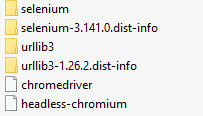
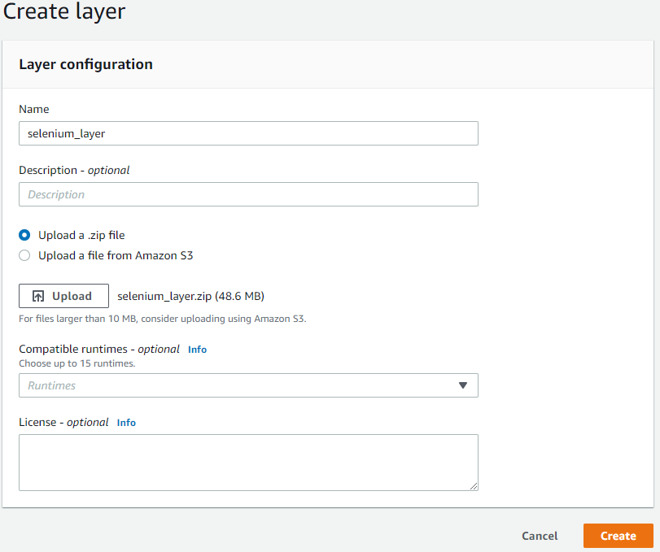
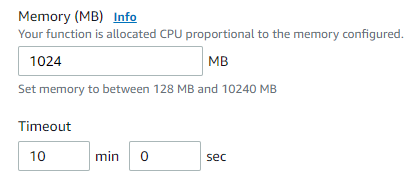

Selenium inside of AWS Lambda
Simple guide to setup and run Selenium WebDriver inside of an
AWS Lambda function?
You got it.
This approach creates an AWS Lambda function running Selenium on a headless Chromium in Python. We will be using an AWS Lambda Layer for Selenium and Chromium browser.
Let's setup a Layer for our Lambda function consisting of the necessary Python libraries, Chromedriver, and headless Chrome browser. The default size for a zip file upload (without hosting the files in an S3 bucket) is 50mb; below links the Chromedriver and Chrome versions which will meet the upload requirement.
Install the Selenium Python package into a specified folder:
pip install --target=<\folder path here\> selenium
Chromedriver and headless-chromium in the same folder.
Let's upload our Layer to AWS and add it to our Lambda function:

Chromedriver and Chromium need to be accessible and writeable;
let's move them into the tmp folder and update their permissions.
os.system("cp /opt/yourfolderhere/chromedriver /tmp/chromedriver")
os.system("cp /opt/yourfolderhere/headless-chromium /tmp/headless-chromium")
os.chmod("/tmp/chromedriver", 0o777)
os.chmod("/tmp/headless-chromium", 0o777)
Chromedriver properties for best result:
chrome_options = webdriver.ChromeOptions()
chrome_options.add_argument('--headless')
chrome_options.add_argument('--disable-gpu')
chrome_options.add_argument('--disable-dev-shm-usage')
chrome_options.add_argument('--no-sandbox')
chrome_options.add_argument('--hide-scrollbars')
chrome_options.add_argument('--enable-logging')
chrome_options.add_argument('--log-level=0')
chrome_options.add_argument('--v=99')
chrome_options.add_argument('--single-process')
chrome_options.add_argument('--ignore-certificate-errors')
chrome_options.binary_location = "/tmp/headless-chromium"
driver = webdriver.Chrome(executable_path="/tmp/chromedriver", chrome_options=chrome_options)
For better performance, increase memory and timeout for the Lambda.
Run a test.
driver.get('https://www.google.com')
WebDriverWait(driver, 10).until(expected_conditions.title_is('Google'))
How about Git in my Lambda? Go here.